PORTFOLIO
 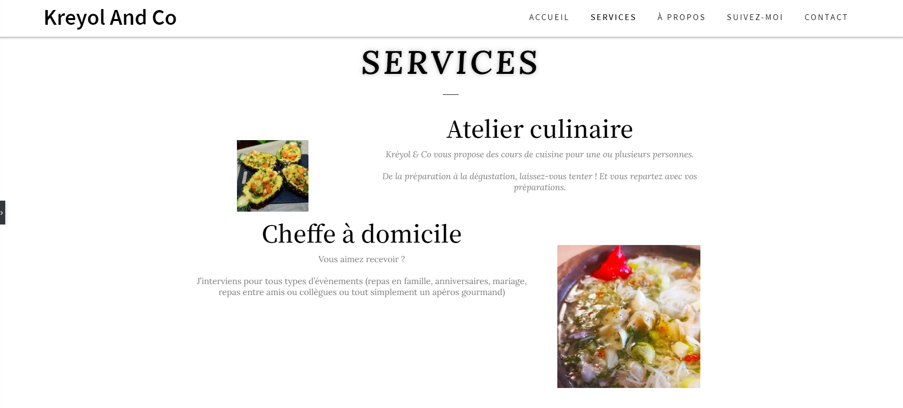
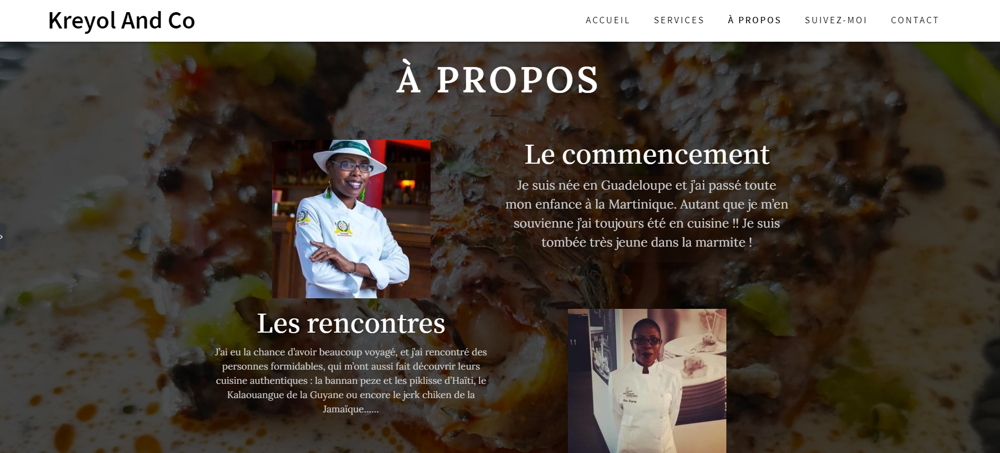
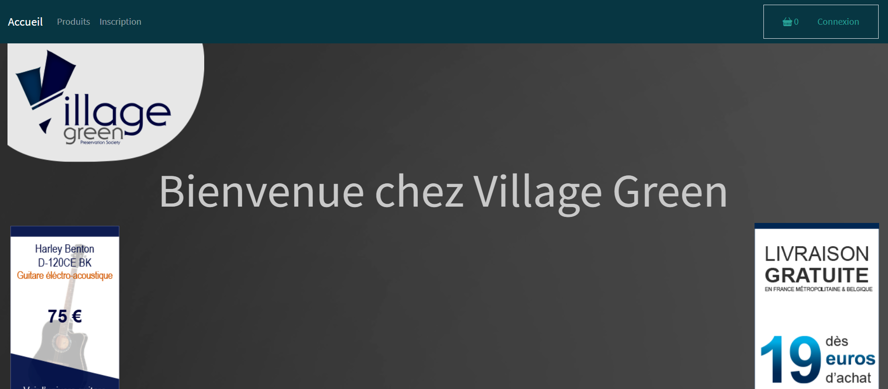
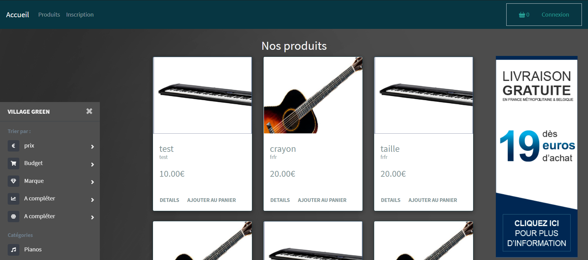
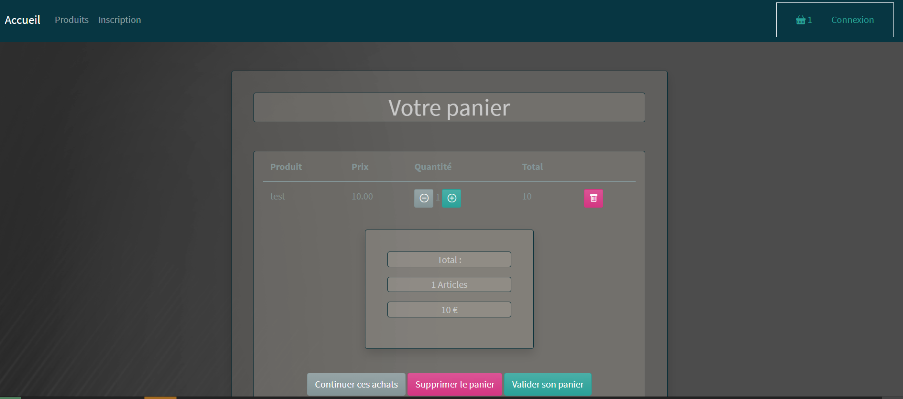
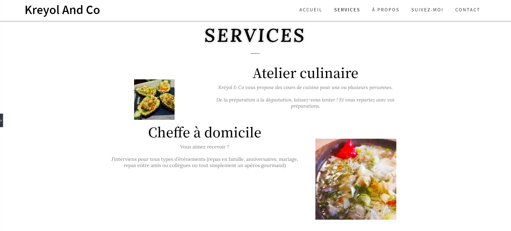
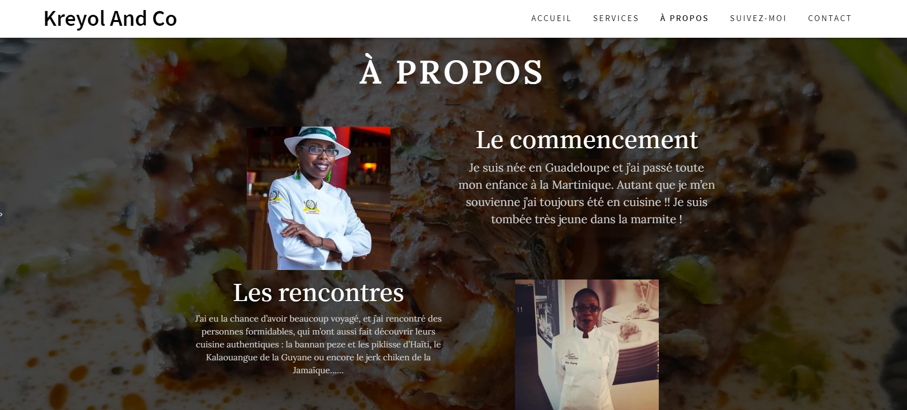
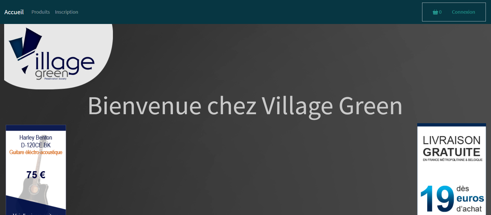
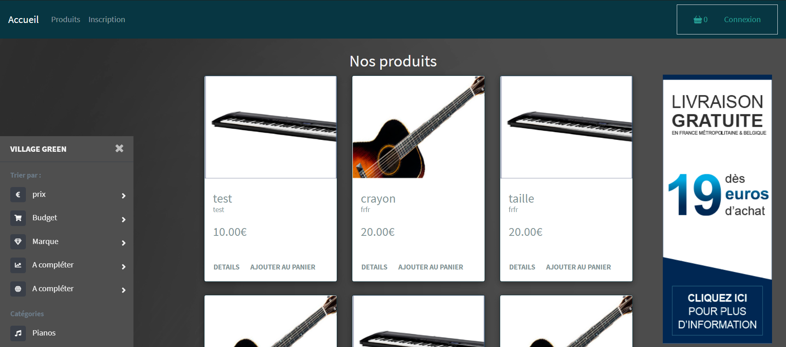
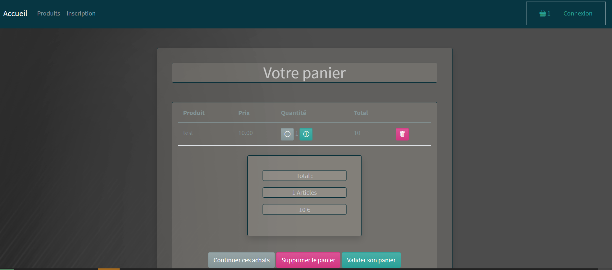
Fort de mes expériences dans le domaine du commerce et du social je me reconvertis dans celui du développement web.
Après avoir obtenu mon titre de Développeur Web et Web Mobile je continue ma formation pour le titre de Concepteur Développeur d'Application afin d'être le plus polyvalent possible et de répondre au mieux à vos attentes.
Sportif de nature, j'aime la compétition et le faite de relever de nouveaux défis. Je suis en recherche constante de l'amélioration de mes compétences et du dépassement de soi.
Actuellement j'ai plus une appétence pour les langages du Back-end (celui de la logique, et de la réflexion) mais je m'entraîne et continue de m'ouvrir à de nouveaux horizons pour performer dans le Front-end (celui de la créativité et du graphisme).
Contactez moi, si vous avez une idée en tête, des projets, des réalisations que vous souhaitez aboutir, nous mettrons corps à vos projets.
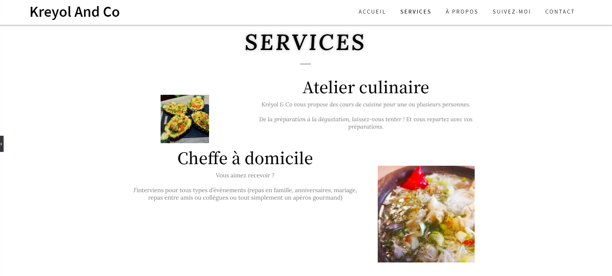
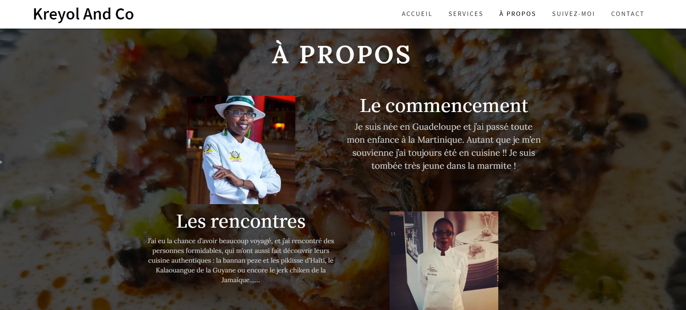
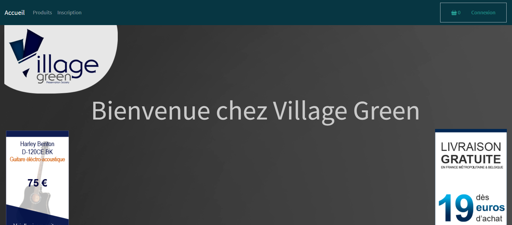
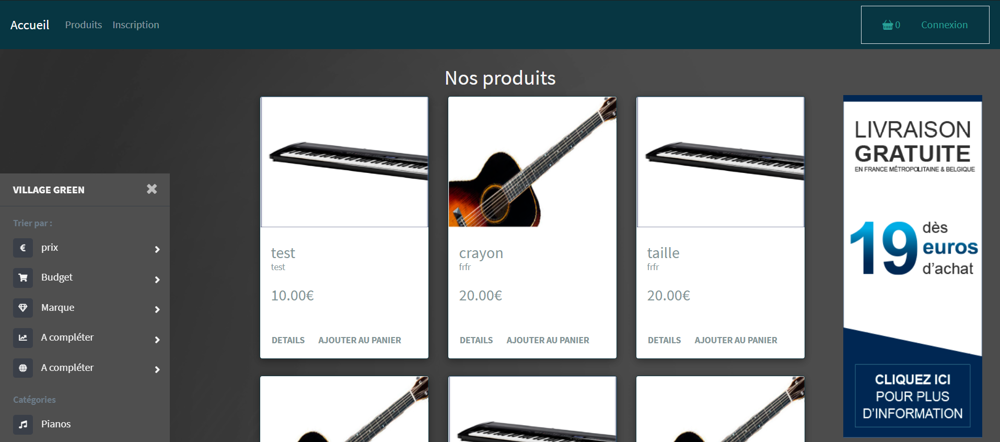
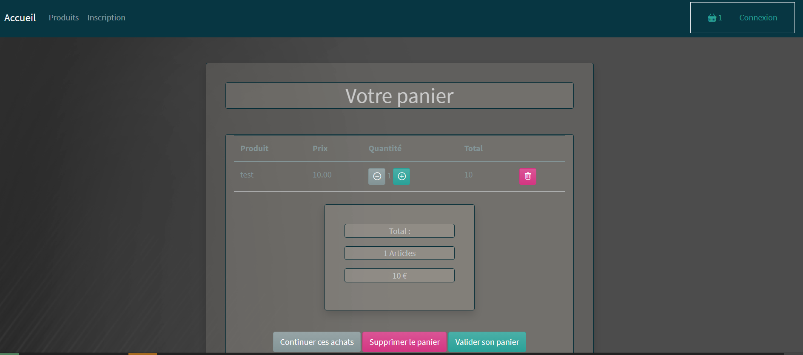

Le web design permet de mettre en avant votre activité sur différent support de communication. Pc, Tablette, Téléphone pourront diffuser vos idées et vous faire connaître pour accroître votre activité. Après une discussion au préalable sur ce que vous souhaitez de votre site, je réaliserai une maquette qui attendra d'être validé par vos soins, et sera mis en production dès qu'elle sera conforme à vos besoins.

Un site internet c'est comme tout, cela répond à des normes et des codes pour être parfaitement compris. Une couleur, une typographie, un certains type de boutton améliore l'interface de l'utilisateur et par la même son expérience vis-à-vis de votre site. C'est un point important à ne pas négliger. Tout ceci sera pris en compte lors de la création ou d'une refonte de votre site web.
Vous souhaitez réaliser un site e-commerce? Comme beaucoup de corps de métier il vous faut les bons outils pour bien travailler. Un système de mailling efficace, des indicateurs de vente, les temps passés sur vos pages, le nombre de clicks, toutes ces informations sont importantes pour être réactif dans un domaine en constante évolution.